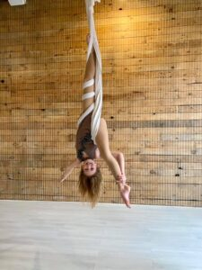
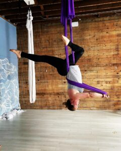
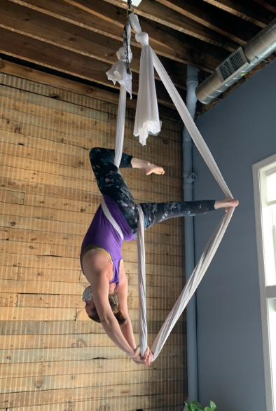

HAMMOCK
If your new to aerial, hammock is the place to start! Also called “aerial sling,” the fabric is tied in a way to create a loop. This makes it easier for beginners to work on strength and mobility.
Aerial Flexability
Aerial meets yoga! This class is designed to focus on specific muscles and body mobility commonly used in aerial arts. The class will incorporate yoga poses and the fabric for a deep and comfortable stretch. Each week a specific muscle group will be focused on to help release tension and build muscle memory to enhance your aerial practice. This class is fun and upbeat, all while increasing our flexibility. This is a beginner friendly class!
Instructor: Mallorie Barabas
Aerial Fit
This class is for students who are looking to build their muscle for aerial practice. Students will experience a new level of strength, focus and conditioning in this fun, yet challenging class! Please arrive 5-10 minutes early to set up. Wearing a shirt with sleeves is recommended to protect armpit area. This class is for ages 16+. Please remove rings and bracelets/watches prior to class to protect the Aerial Fabric!
Instructor: Madison Hong Zweber
Aerial Flow
Students will be guided through an Aerial warm-up with stretching and strengthening before moving into aerial skills. Please attend an Intro to Aerial class before coming to Aerial Flow. Please arrive 5-10 minutes early to set up. Wearing a shirt with sleeves is recommended to protect armpit area. Please remove rings and bracelets/watches prior to class. This class is best suited for those that have taken a few aerial classes.